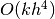

REFERENCES
- Agnon, Y., Madsen, P. A. and Schaffer, H. A., 1999, “A new approach to high-order Boussinesq models”, J. Fluid Mech., 399, 319-333.
- Berkhoff, J. C. W., Booy, N. and Radder, A. C., 1982, “Verification of numerical wave propagation models for simple harmonic linear water waves”, Coast. Engrg., 6, 255-279.
- Bermudez, A. and Vazquez, M. E., 1994, “Upwind methods for hyperbolic conservation laws with source terms”, Comput. Fluids, 23 (8), 1049-1071.
- Briggs, M. J., Synolakis, C. E., and Harkins, G. S., 1994, “Tsunami run- up on a conical island”, Proc., Waves-Physical and Numerical Modelling, International Association for Hydraulic Research, Delft, The Netherlands, 446-455.
- Brown, J., MacMahan, J., Reniers, A. J. H. M. and Thornton, E., 2009, “Surf zone diffusivity on a rip-channeled beach”, J. Geophys. Res., 114, C11015, doi:10.1029/2008JC005158.
- Chen, Q., Dalrymple, R. A., Kirby, J. T., Kennedy, A. B. and Haller, M. C., 1999, “Boussinesq modelling of a rip current system”, J. Geophys. Res., 104, 20,617-20,637.
- Chen, Q., Kirby, J. T., Dalrymple, R. A., Kennedy, A. B. and Chawla, A., 2000, “Boussinesq modeling of wave transformation, breaking and runup. II: 2D”, J. Waterway, Port, Coastal and Ocean Engineering, 126, 48-56.
- Chen, Q., Kirby, J. T., Dalrymple, R. A., Shi, F. and Thornton, E. B., 2003, “Boussinesq modeling of longshore currents”, Journal of Geophysical Research, 108 (C11), 3362, doi:10.1029/2002JC001308.
- Chen, Q., Kaihatu, J. M., and Hwang, P. A., 2004, “Incorporation of Wind Effects Into Boussinesq Wave Models”, J. Waterway, Port, Coastal and Ocean Engineering, 130, 312-321.
- Chen, Q., 2006, “Fully nonlinear Boussinesq-type equations for waves and currents over porous beds”, * Journal of Engineering Mechanics.* 132 (2): 220-230.
- Erduran, K. S., Ilic, S., and Kutija, V., 2005, “Hybrid finite-volume finite-difference scheme for the solution of Boussinesq equations”, Int. J. Numer. Meth. Fluid., 49, 1213-1232.
- Gobbi, M. F., Kirby, J. T. and Wei, G., 2000, “A fully nonlinear Boussinesq model for surface waves. II. Extension to ”, Journal of Fluid Mechanics, 405, pp. 181-210.
- Goda, Y., 2000, Random seas and design of maritime structures, Advanced Series on Ocean Engineering, Volume 15, 2nd Edition, World Scientific, Singapore.
- Gottlieb, S., Shu C.-W., and Tadmore, E., 2001, “Strong stability-preserving high-order time discretization methods”, SIAM Review, 43 (1), 89 - 112.
- Hansen, J. B., and Svendsen, I. A., 1979, “Regular waves in shoaling water: Experimental data”, Tech. Rep. ISVA Ser., 21, Technical Univ. of Denmark, Denmark.
- Kennedy, A. B., Chen, Q., Kirby, J. T. and Dalrymple, R. A., 2000, “Boussinesq modeling of wave transformation, breaking and runup. I: 1D”, J. Waterway, Port, Coastal and Ocean Engineering, 126, 39-47.
- Kennedy, A. B., Kirby, J. T., Chen, Q. and Dalrymple, R. A., 2001, “Boussinesq-type equations with improved nonlinear performance”, Wave Motion, 33, pp. 225-243.
- Kim D. H., Cho, Y. S., and Kim, H. J., 2008, “Well-balanced scheme between flux and source terms for computation of shallow-water equations over irregular bathymetry”, Journal of Engineering Mechanics, 134, 277-290.
- Kim, D. H., Lynett, P. J. and Socolofsky, S. A., 2009, “A depth-integrated model for weakly dispersive, turbulent, and rotational fluid flows”, Ocean Modeling, 27, 198-214.
- Kim, D. H., 2009, “Turbulent flow and transport modeling by long waves and currents”, Ph.D. dissertation, Texas A& M University.
- Kirby, J. T., Wei, G., Chen, Q., Kennedy, A. B. and Dalrymple, R. A., 1998, “FUNWAVE 1.0, Fully nonlinear Boussinesq wave model. Documentation and userï¿œs manual”. Report CACR-98-06, Center for Applied Coastal Research, Department of Civil and Environmental Engineering, University of Delaware.
- Kirby, J.T., Shi, F., Watts, P., Grilli, S.T., 2004, “Propagation of short, dispersive tsunami waves in ocean basins”. EOS Transactions of the AGU 85 (47) Abstract OS21E-02.
- Kirby, J. T., Shi, F., Harris, J. C., and Grilli, S. T., 2012, “Sensitivity analysis of trans-oceanic tsunami propagation to dispersive and Coriolis effects”, Ocean Modelling, under revision.
- Liang, Q. and Marche, F., 2009, “Numerical resolution of well-balanced shallow water equations with complex source terms”, Advances in Water Resources, 32, 873 - 884.
- Long, W. and Kirby, J. T., 2006, “Boussinesq modeling of waves, currents and sediment transport”, Research Report No. CACR-06-02, Center for Applied Coastal Research, Dept. of Civil and Environmental Engineering, Univ. of Delaware, Newark.
- Lynett, P. J., Wu, T.-R. and Liu, P. L.-F., 2002, “Modeling wave runup with depth-integrated equations”, Coastal Engineering, 46, 89-107.
- Madsen, P.A., Srensen, O.R., 1992, “A new form of the Boussinesq equations with improved linear dispersion characteristics. Part 2. A slowly-varying bathymetry”, Coastal Engineering 18 (3-4), 183-204.
- Mase, H., and Kirby, J. T., 1992, “Hybrid frequency-domain KdV equation for random wave transformation”, Proc., 23rd Int. Conf. Coast. Eng., ASCE, New York, 474-487.
- Naik, N. H., Naik, V. K., and Nicoules, M., 1993, “Parallelization of a class of implicit finite difference schemes in computational fluid dynamics”, * International Journal of High Speed Computing*, 5: 1-50.
- Ning, D. Z., Zang, J., Liang, Q., Taylor, P. H., and Borthwick, A. G. L., 2008, “Boussinesq cut-cell model for non-linear wave interaction with coastal structures”, International Journal for Numerical Methods in Fluids, 57 (10), 1459-1483.
- Nwogu, O., 1993, “An alternative form of the Boussinesq equations for nearshore wave propagation”, Journal of Waterway, Port, Coastal, and Ocean Engineering, 119 (6), pp. 618-638.
- Nwogu, O. and Demirbilek, Z., 2001, “BOUSS-2D: A Boussinesq wave model for coastal regions and harbors”, ERDC/CHL TR-01-25, Coastal and Hydraulics Laboratory, USACOE Engineer Research and Development Center, Vicksburg, MS.
- Roeber, V., Cheung, K. F., and Kobayashi, M. H., 2010, “Shock-capturing Boussinesq-type model for nearshore wave processes”, Coastal Engineering, 57, 407-423.
- Rogers, B. D., Borthwick, A. G. L., and Taylor, P. H., 2003, “Mathematical balancing of flux gradient and source terms prior to using Roe’s approximate Riemann solver”, Journal of Computational Physics, 192, 422-451.
- Shi, F., Kirby, J. T., Harris, J. C., Geiman, J. D., and Grilli, S. T., 2012 a, “A high-order adaptive time-stepping TVD solver for Boussinesq modeling of breaking waves and coastal inundation”, Ocean Modelling, 43-44, 36-51.
- Shi, F., Kirby, J. T., and Tehranirad, B. , 2012 b, Tsunami benchmark results for spherical coordinate, Center for Applied Coastal Research Report, CACR 2012-02, University of Delaware, Newark, Delaware.
- Shi, F., Kirby, J. T., Tehranirad, B. and Harris, J. C., 2011, FUNWAVE-TVD, Version 1.0, users’ manual and benchmark tests, Center for Applied Coastal Research Report, CACR 2011-04, University of Delaware, Newark, Delaware.
- Shi, F., Dalrymple, R. A., Kirby, J. T., Chen, Q. and Kennedy, A., 2001, “A fully nonlinear Boussinesq model in generalized curvilinear coordinates”. Coastal Engineering, 42, pp. 337-358.
- Shiach, J. B. and Mingham, C. G., 2009, “A temporally second-order accurate Godunov-type scheme for solving the extended Boussinesq equations”, Coastal Engineering, 56, 32-45.
- Sitanggang, K. I. and Lynett, P., 2005, “Parallel computation of a highly nonlinear Boussinesq equation model through domain decomposition”, Int. J. Num. Meth. Fluids, 49, 57-74.
- Smagorinsky, J., 1963, “General circulation experiments with the primitive equations. I. The basic experiment”, Mon. Weather Rev, 91, 99-165.
- Swigler, D. and Lynett, P. ,2011, “Laboratory study of the three-dimensional turbulence and kinematic properties associated with a solitary wave traveling over an alongshore-variable, shallow shelf”.
- Synolakis, C. E., Bernard, E. N., Titov, V. V., Kanoglu, U. and Gonzalez, F. I., 2007, “Standards, criteria, and procedures for NOAA evaluation of tsunami numerical models”, NOAA Tech. Memo. OAR PMEL-135, National Oceanic and Atmospheric Administration.
- Tehranirad, B., Shi, F., Kirby, J. T., Harris, J. C. and Grilli, S., 2011, “Tsunami benchmark results for fully nonlinear Boussinesq wave model FUNWAVE-TVD, Version 1.0”, Research Report No. CACR-11-02, Center for Applied Coastal Research, University of Delaware.
- Ting, F.C.K., Kirby, J.T., 1994, “Observation of undertow and turbulence in a laboratory surf zone”. Coast. Eng. 24, 51.
- Tonelli, M. and Petti, M., 2009, “Hybrid finite volume - finite difference scheme for 2DH improved Boussinesq equations”, Coast. Engrng., 56, 609-620.
- Tonelli, M. and Petti, M., 2010, “Finite volume scheme for the solution of 2D extended Boussinesq equations in the surf zone”, Ocean Engrng., 37, 567-582.
- Toro, E. F., 2009, Riemann solvers and numerical methods for fluid dynamics: a practical introduction, Third edition, Springer, New York.
- Wei, G., Kirby, J.T., Grilli, S.T., Subramanya, R., 1995, “A fully nonlinear Boussinesq model for surface waves: Part I. Highly nonlinear unsteady waves”, * Journal of Fluid Mechanics* 294, 71-92
- Wei, G. and Kirby, J. T., 1995, “A time-dependent numerical code for extended Boussinesq equations”, Journal of Waterway, Port, Coastal and Ocean Engineering, 120, pp. 251-261.
- Yamamoto, S., Daiguji, H., 1993, “Higher-order-accurate upwind schemes for solving the compressible Euler and Navier-Stokes equations”, Computers and Fluids, 22 (2/3), 259-270.
- Yamamoto, S., Kano, S. and Daiguji, H, 1998, “An efficient CFD approach for simulating unsteady hypersonic shock-shock interference flows”, Computers and Fluids, 27 (5-6), pp. 571-580.
- Zelt, J. A., 1991, “The runup of nonbreaking and breaking solitary waves”, Coastal Engineering, 15, pp. 205-246.
- Zhen, F., 2004, “On the numerical properties of staggered vs. non-staggered grid schemes for a Boussinesq equation model”, MCE Thesis, Department of Civil and Environmental Engineering, University of Delaware.
- Zhou, J. G., Causon, D. M., Mingham C. G., and Ingram, D. M., 2001, “The surface gradient method for the treatment of source terms in the shallow-water equations”, Journal of Computational Physics, 168, 1-25.